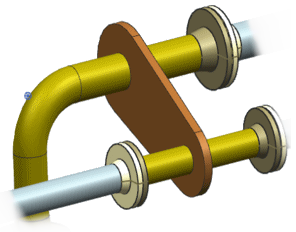

预计完成这堂课需要：7–10 分钟
水密连接件在造船业中用于密封壁中的开口A watertight fitting is a structure used in shipbuilding to seal off an opening in a wall through which one or more pipe runs must pass. The fitting consists of a flange that butts up against the opening in the wall, along with any other routing structures that actually penetrate the wall.

您生成水密连接件时，您先构建一个类似平板的名为弯边的特征，用于密封开放When you generate a watertight fitting, you first construct a plate-like feature called a ‘flange’ to seal the opening shut. To do this, you can select the edges of the wall opening itself, or you can generate a set of curves representing the profile of the flange. You then extrude the profile into a flange. The routing objects you select to penetrate the structure are included along with the flange in the model of the watertight fitting. The completed fitting then becomes a component of the routing assembly. Afterwards you can modify the fitting as needed with any additional hardware.
|
工具条 |
机械管线布置→工具下拉菜单→水密连接件 |
|
菜单 |
工具→水密连接件 |